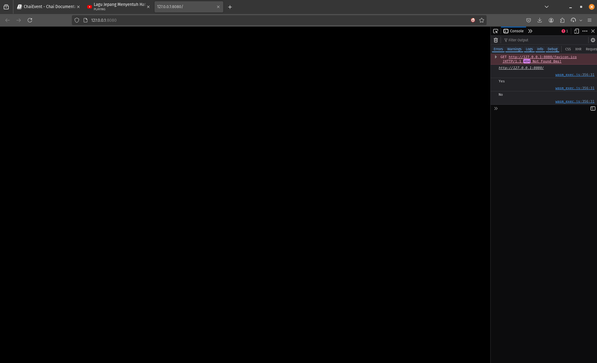

ChaiEvent
ChaiEvent is the take of Chai Engine upon Events and Listeners. What is an Event? It's a collection of Methods that of similar structure that get called all at once when the Event itself is Invoked. What's the use of an Event when you can call the methods themself? Well the benefit is that the Event fires whether there are methods added to it or not. This enables a more detached code that will be less error prone.
package main
import (
chai "github.com/mhamedGd/chai"
)
var app chai.App = chai.App {
Title: "",
Width: 1920,
Height: 1080,
OnStart: func(){
_test_chai_event := chai.NewChaiEvent()
_test_chai_event.AddListener(PrintYes)
_test_chai_event.AddListener(PrintNo)
_test_chai_event.Invoke()
},
OnUpdate: func(_delta_time float32){},
OnDraw: func(_delta_time float32){},
OnEvent: func(_event *AppEvent){},
}
func PrintYes() {
chai.LogF("Yes")
}
func PrintNo() {
chai.LogF("No")
}
func main() {
chai.Run(&app)
}
Output 
ChaiEvents with Parameters
type ChaiEvent1[A any] struct
type ChaiEvent2[A, B any] struct
type ChaiEvent3[A, B, C any] struct
type ChaiEvent4[A, B, C, D any] struct
type ChaiEvent5[A, B, C, D, E any] struct
In-order to Call a function that takes a parameter you need the specific ChaiEvent, Each ChaiEvent listed (1->5) takes a different number of parameters.
Let's Checkout a ChaiEvent with a single parameter
var app chai.App = chai.App {
Title: "",
Width: 1920,
Height: 1080,
OnStart: func(){
_test_chai_event := chai.NewChaiEvent1[string]()
_test_chai_event.AddListener(Print)
_test_chai_event.Invoke("Yes")
_test_chai_event.Invoke("No")
},
OnUpdate: func(_delta_time float32){},
OnDraw: func(_delta_time float32){},
OnEvent: func(_event *chai.AppEvent){},
}
func Print(_message string) {
chai.LogF(_message)
}
func main() {
chai.Run(&app)
}
Output
ChaiEvent Methods
_test_chai_event := chai.NewChaiEvent()
_test_chai_event := chai.NewChaiEvent1[string]()
_test_chai_event := chai.NewChaiEvent2[string, int]()
_test_chai_event := chai.NewChaiEvent3[string, int, string]()
_test_chai_event := chai.NewChaiEvent4[string, int, string, float32]()
_test_chai_event := chai.NewChaiEvent5[string, int, string, float32, bool]()
_test_chai_event.AddListener(_method_name)
_test_chai_event.RemoveListener(_method_name)
_test_chai_event.Invoke(_parameters_if_any)